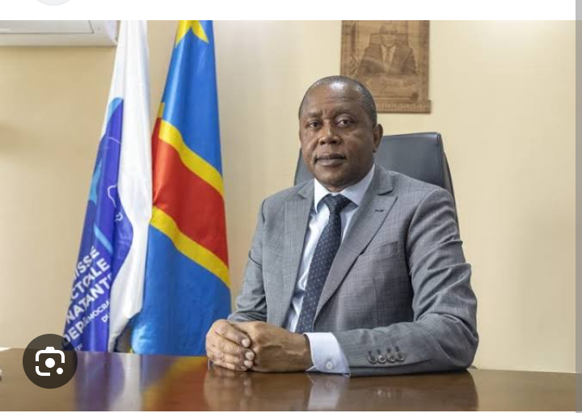

PRESIDENT DE LA CENI KADIMA KAZADI
RDC: les candidats à la députation nationale ont sept jours de plus pour
déposer leur dossier
En RDC, la Commission électorale nationale indépendante (Céni) proroge
d’une semaine le délai de dépôt des candidatures à la députation
nationale pour les élections générales du 20 décembre 2023.
Les bureaux d’enregistrement, ouverts depuis le 25 juin,
devaient fermer ce samedi 15 juillet. Finalement,
ils resteront ouverts jusqu’au dimanche 23 juillet 2023.
C’est après une réunion plénière ce samedi 15 juillet que la
Céni a donc annoncé sa décision.
Publié le : 15/07/2023
Lire plus

MARTIN Fayulu MADIDI
Fichier électoral en RDC: l’opposant Martin Fayulu et son parti «ne déposeront pas de candidature»
Au cours d’une conférence de presse très attendue, l’opposant congolais Martin Fayulu a dit mercredi 12 juillet que « cette fois-ci, ça ne passera pas », après le refus de la Commission électorale nationale indépendante de revoir le fichier électoral. L’opposant réitère que lui et son parti « ne déposeron[t] pas de dossiers de candidatures », se disant avoir « l’obligation de faire échec à toute forme de dictature ».
Publié le : 13/07/2023 - 01:25
2 mn
Martin Fayulu, le 27 octobre 2022 dans les studios de RFI et France 24.
Martin Fayulu, le 27 octobre 2022 dans les studios de RFI et France 24. © RFI
Texte par :
RFI
Suivre
PUBLICITÉ
Avec notre correspondant à Kinshasa, Pascal Mulegwa
La fin de non-recevoir brandie par la Commission électorale nationale
indépendante (Céni) est pour Martin Fayulu la « provocation de trop » :
si l’opposant refuse de parler de boycott, lui et sa
coalition ne comptent pas se présenter. Il estime que sur près
de 44 millions
d’électeurs, au moins de 10 millions sont des noms fictifs.
« En l’absence d’un fichier fiable audité par un organisme
indépendant réputé, en présence des délégués des parties prenantes,
nous ne déposerons pas nos dossiers de candidatures, a-t-il annoncé
lors de la conférence de presse de son parti. Nous refusons de blanchir
la fraude et donc d’accompagner monsieur [le président congolais] Félix
Tshisekedi
et son union sacrée dans une nouvelle forfaiture électoral. »
Martin Fayulu accuse la Céni de vouloir se servir du peuple « comme
strapontin pour vendre une illusion de démocratie » et se tourne vers
la rue : « Nous allons entreprendre une campagne de mobilisation en vue
de préparer le peuple à l’utilisation de l’article 64 : nous avons l’obligation
de faire échec à toute forme de dictature d’où qu’elle vienne. Nous devons donc
nous mobiliser pour empêcher que la parodie électorale en préparation ne se réalise. »
La Céni n’a pas bougé d’un iota et qualifie d’illogiques les positions de l’opposition.
Très irrité par la Céni et le camp au pouvoir, Martin Fayulu rappelle que lors du dernier
cycle électoral, le fichier en question avait non seulement été audité par l’organisation
internationale de francophonie, mais aussi des experts des différentes branches
de l’opposition et ceux du camp présidentiel.
Lire plus

MOISE KATUMBI CHAPWE
Dans la tête de Moïse Katumbi
Après une longue période d’accalmie, calculs et tergiversation,
Moïse Katumbi lance finalement sa machine électorale à l’encontre
de Félix Tshisekedi. L’ancien gouverneur du Katanga joue à quitte
ou double pour l’emporter à la présidentielle de 2023.
La RédactionBy La Rédaction3 octobre 2022 à 17:38
PARTAGER
C’est le secret le moins bien gardé en République démocratique
du Congo. Moïse Katumbi veut devenir président et succéder à
Félix Tshisekedi. Après avoir été bloqué par Joseph Kabila aux
portes de Kasumbalesa, dans le sud-est du pays en 2018, l’homme qui
n’a juré que de son élection à la tête du pays depuis 2015, estime donc
que son heure est venue. Mais il soit cependant faire face à un Félix
Tshisekedi qui risque de lui jouer un mauvais tour. Aussi, à l’heure de
lancer l’assaut final sur son allié de l’Union Sacrée, Moïse Katumbi préfère
s’y prendre avec prudence, mettant d’abord en avant un autre visage, celui de
son porte-parole et directeur de cabinet, Olivier Kamitatu.
Les dessous d’une offensive
Les événements actuels trouvent leurs origines du côtés des Etats-Unis. Le 02 juin 2022,
Christophe Lutundula, vice-premier ministre et ministre des affaires étrangères de la
République démocratique du Congo, est à Washington. L’un des ministres clés du
gouvernement congolais a rendez-vous avec son homologue américain, Antony Blinken.
A Kinshasa, cette rencontre est d’une importance capitale. Car depuis plusieurs semaines,
l’armée nationale recule de plus en plus face à la rébellion du M23. Mais la RDC est certaine.
Elle n’affronte pas une rébellion, plutôt une armée gouvernementale. Celle du Rwanda précisément.
Énième agression donc du régime de Kigali. Bis repetita. Toutefois, contrairement en 2012 lorsque
le M23 avait pris Goma, la Communauté internationale, les Etats-Unis particulièrement, peinent cette
fois à dénoncer le Rwanda.
Lire plus

ENROLEMENT DES ELECTEUR
vos commentaire